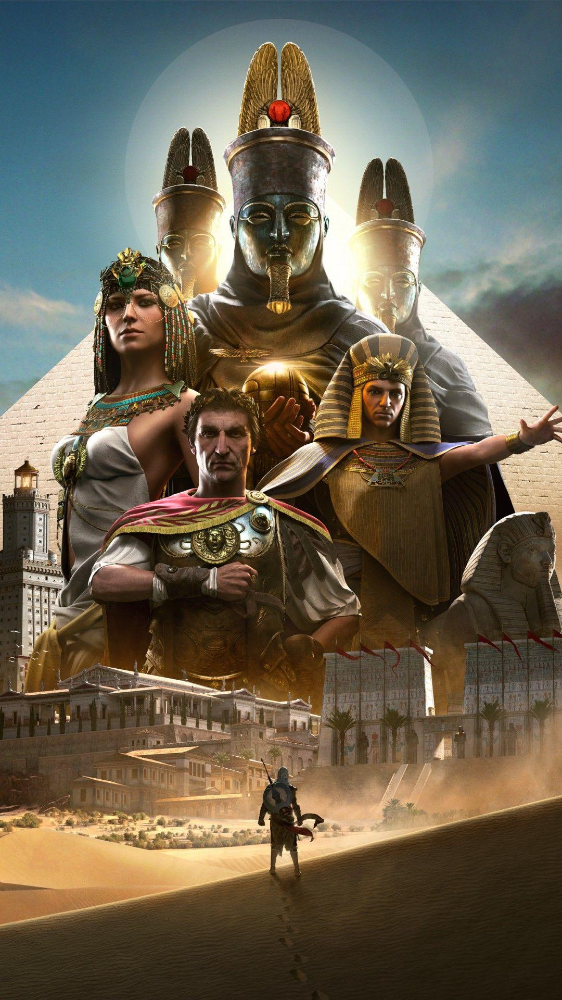
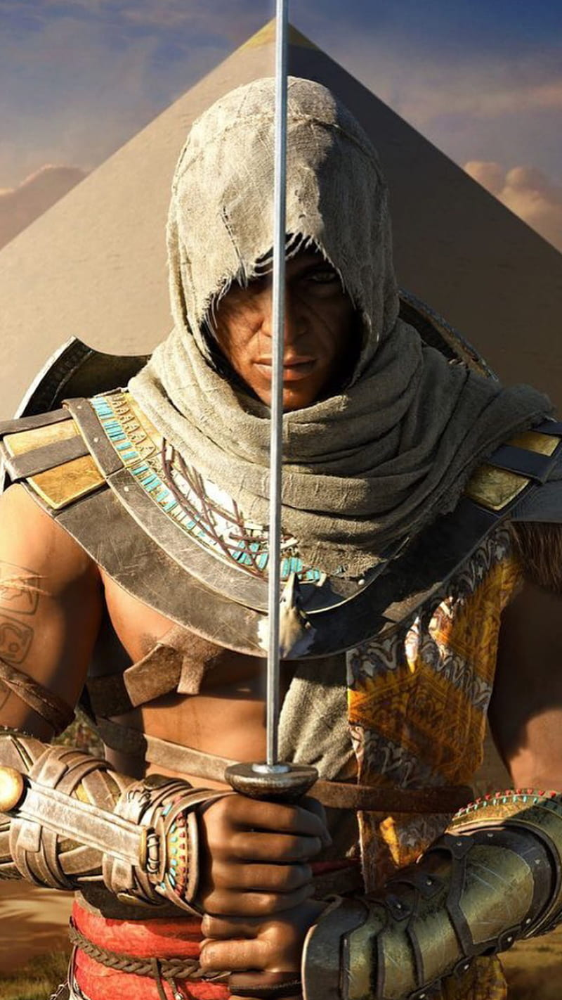

About Assassin's Creed Origins
Assassin's Creed Origins is set in ancient Egypt, where you play as Bayek, a skilled warrior. Uncover the origins of the Assassin Brotherhood and explore a vast open-world filled with historical landmarks and intriguing characters.
Gameplay Features

Open-world exploration Stealth assassinations and RPG Elements with Character Rich Storyline with historical Survival challenges
Explore Ancient Egypt
Roam through diverse landscapes, from bustling cities to deserts and lush oases. Witness the marvels of ancient Egyptian architecture and immerse yourself in the historical setting.
Combat and Stealth
.jpg)
Engage in intense combat with a variety of weapons or take a stealthy approach to eliminate your targets. The game offers a dynamic and strategic combat system.
Historical Context

Assassin's Creed Origins is known for its attention to historical detail. Encounter famous figures from ancient Egypt and witness events that shaped the region during this period.
Reception

The game received positive reviews for its storytelling, visuals, and gameplay mechanics. It has become a notable entry in the Assassin's Creed series.